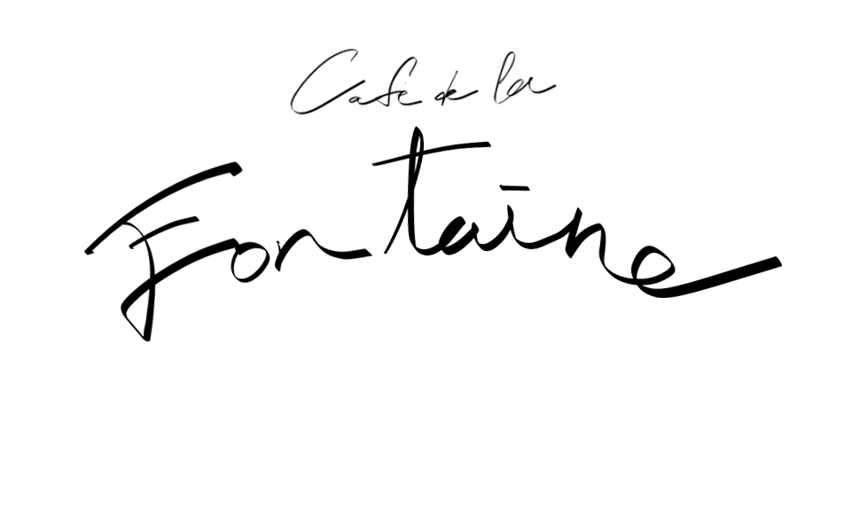
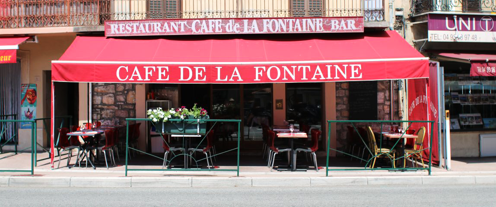
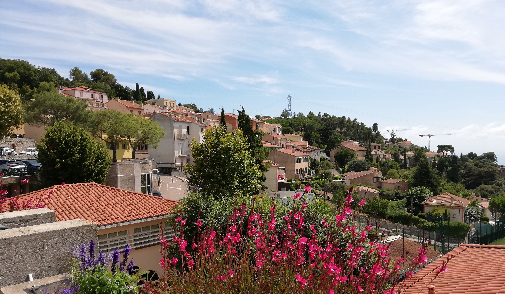
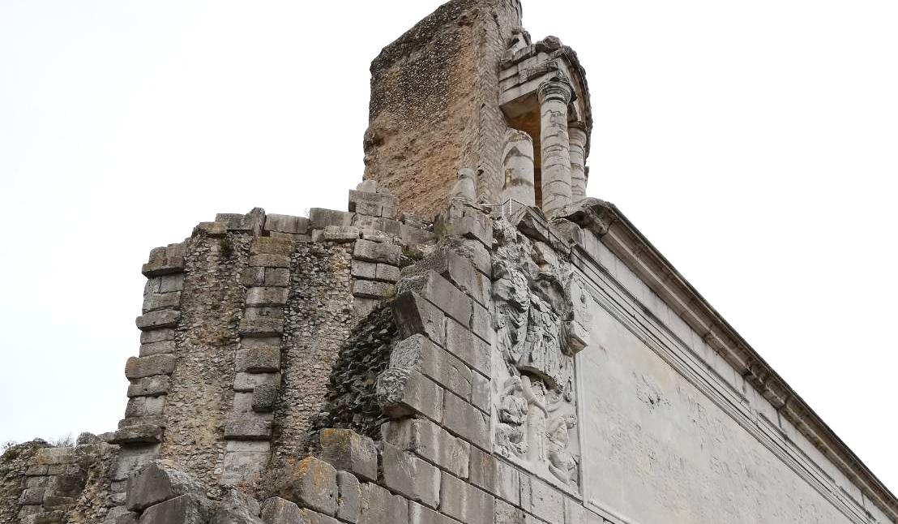
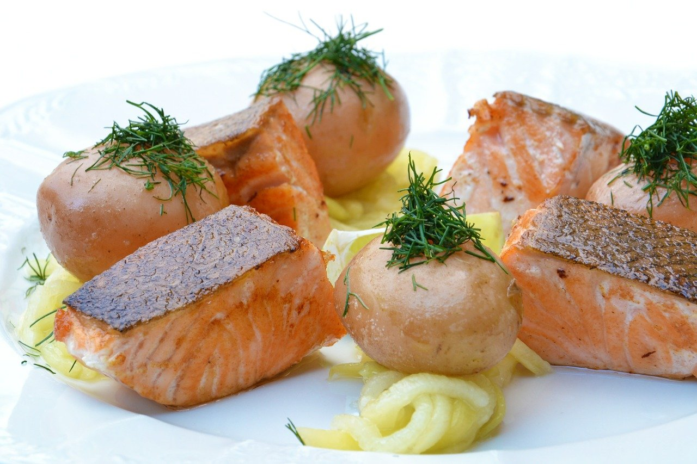
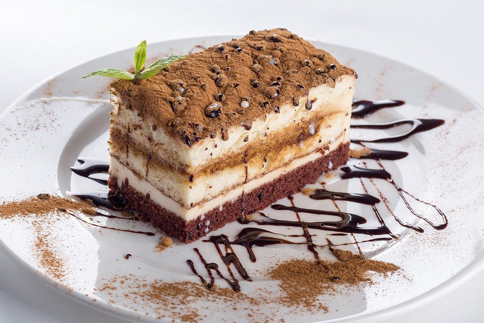
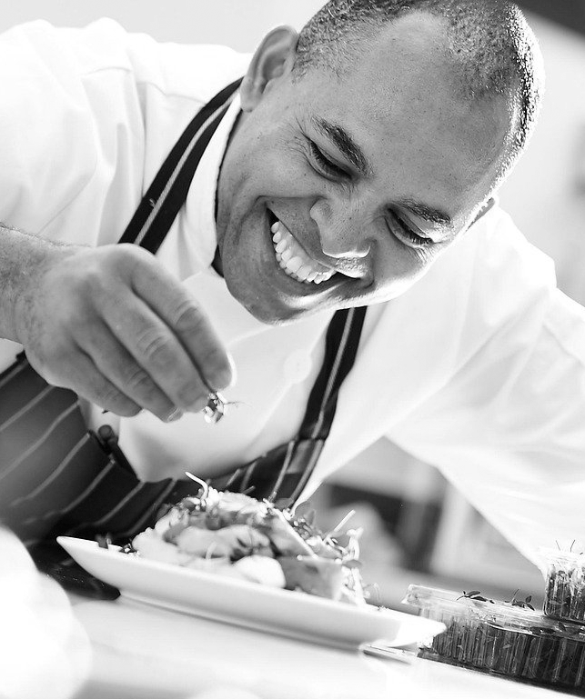
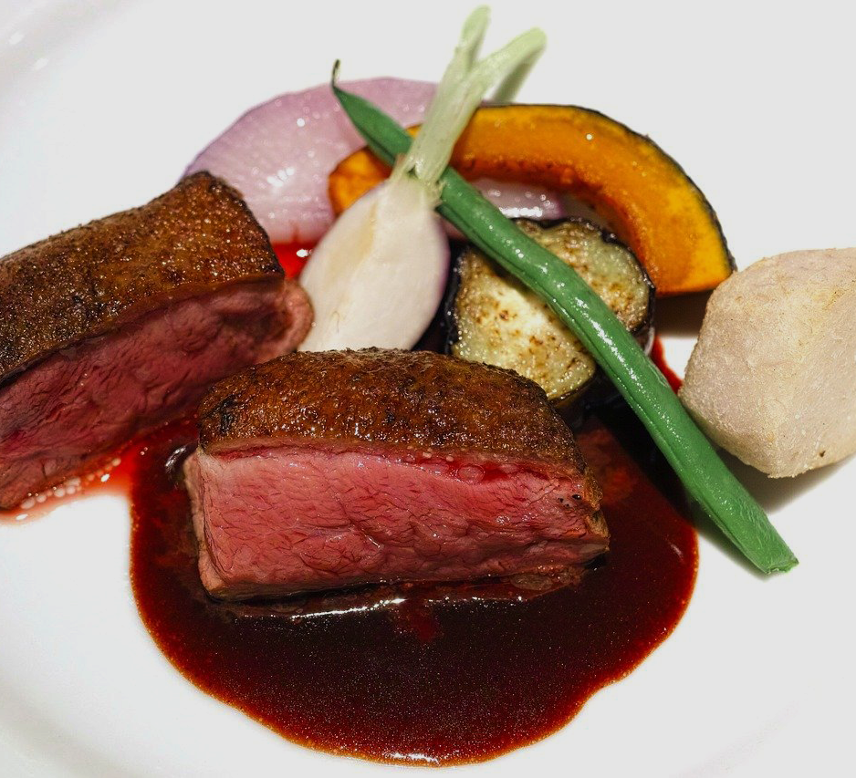

<!DOCTYPE html>
<html lang="ja">
<head>
    <meta charset="UTF-8">
    <meta name="viewport" content="width=device-width, initial-scale=1.0, maximum-scale=1.0, minimum-scale=1.0">
    <link rel="stylesheet" href="style.css">
    
    <script src="https://kit.fontawesome.com/d54e831f35.js" crossorigin="anonymous"></script>
    
    
    <title>portfolio(c)</title>
</head>
<body>
    <header>
        <div class="content">
            <div class='logo'></div>
            <div class="a-content">
                <div class='header-move'>
                    <ul class="menus">
                        <li><a href="#welcome">Welcome</a></li>
                        <li><a href="#menu">Menu</a></li>
                        <li><a href="#chef">Chef</a></li>
                        <li><a href="#access">Access</a></li>
                    </ul> 
                    
                </div>
                <button class="btn700">
                    <span></span>
                    <span></span>
                    <span></span>
                </button>
                <div class="head-right">
                    <div class='reserve-btn'>

                        <a class='head-reserve' href="#">Reservation</a>   
                    </div>
                
    
                </div>

            </div>

        </div>
    </header>
    <div class="main-image">
        

    </div>

    <div class='before-welcome'>
        <h3>モナコを望む丘にある、<br>二つ星シェフの自然派フレンチ・カフェレストラン</h3>
    </div>
    
    <div id = 'welcome' class="welcome-wrapper">

        <div class ='welcome-content'>
            <div class="welcome-text">
                
                <h1><span class= 'initial'>W</span>elcome</h1>
                <p>ニース近郊、モナコを一望できる丘にある小さな町、La Turbie/ラ・チュルビー。
                    ローマ初代皇帝、アウグストゥスを讃える巨大記念碑があることで知られるこの町に、ミシュラン二つ星シェフがオーナーを勤めるフレンチのカフェレストラン、カフェ・ド・ラ・フォンテーヌはあります。
                </p>
                <p>

                    契約している無農薬農家の野菜と毎朝オーナー自らが市場に訪れ、新鮮な食材を仕入れています。その日に選び抜いた最良の食材によってメニューが決められるので、毎日特別な料理をお楽しみいただけます。
                     食後には、本場イタリアのコーヒー豆を使ったエスプレッソコーヒーはいかがでしょうか。
                    世界中から集まった、日本人を含めたスタッフと共にお客さまのご来店をお待ちしております。
                </p>
            </div>
            <div class='welcome-images'>
                
                
                

            </div>

        </div>
        <div class="container">
        　　
    
        </div>

    </div>

    
    <div id = 'menu' class="menu-wrapper">
        
        <h1 class="menu-title"><span class='initial'>M</span>enu</h1>
        <div class="menu-content">
            <div class="frame menus1">
                
                
                
                
                
                <div class="aboutthis move1">
                    <p class='alacarte'>- Fish -</p>
                    <div class="forborder">

                        <p class="mealname">ポテトとサーモンのアンサンブル</p>
                    </div>
                    <p class="price">9,50€</p>

                </div>
            </div>


        
            <div class="frame menus2">
                

                <div class="aboutthis move2">
                    <p class='alacarte'>- Meat -</p>
                    <div class="forborder">

                        <p class="mealname">鴨肉のロティ</p>
                    </div>
                    <p class="price">15,40€</p>

                </div>
            </div>


            <div class="frame menus3">
                
                
                <div class="aboutthis move3">
                    <p class='alacarte'>- Dessert -</p>
                    <div class="forborder">

                        <p class="mealname">ティラミス・ド・エスプレッソ</p>
                    </div>
                    <p class="price">6,50€</p>

                </div>
            </div>
            
            
        </div>
    </div>


    <div id ='chef' class="chef-wrapper">
        <div class="forchef-title">
            <div class='chef-box'></div>
            <h1 class="chef-title"><span class= 'initial'>C</span>hef</h1>

        </div>
        <div class="chef-content">
              

        </div>
        <div class="chef-content2">
            
        </div>
    </div>


    <div class="aboutchef">
        <div class="chefs">
            

        </div>
        <div class="chef-text">
            <div class="hisname">
                

                <h1 class='cirino'><span>B</span>RUNO CIRINO</h1>
                <p>ブルーノ・チリノ</p>
            </div>
            <div class="hisbackground">
                <h3>history</h3>
                <ul>
                    <li>- l'Hostellerie gérôme(★★)</li>
                    
                    <li>- Café de la fontaine</li>
                    <li>- Racines</li>
                </ul>
            </div>

        </div>
        
    </div>


    <div id ='access' class="access-wrapper">
        <div class="access-content">
            <div class="container">

                <div class="aboutaccess">
    
                    <h1><span class='initial'>A</span>ccess</h1>
                    <h4>Address</h4>
                    <ul>
                        <li>4 Avenue du Général de Gaulle, 06320 La Turbie</li>
                        <li>/ラ・チュルビー, Général de Gaulle4番大通り</li>
                    </ul>
                    <h4>Way to go (bus)</h4>
                    <ul>
                        <li>From モナコ）11番線バス　Monaco Casino, la Turbie Mairie行き</li>
                        <li>From ニース）ｔの66番線バス　Pon Michel, a Turbie Mairie行き</li>
                        
                    </ul>
                    <div class="photos">
                        
                        
                    </div>
                    <a href="https://goo.gl/maps/ExNad3n2eaks7m99A">Google Map</a>
                    
                    <div class='reserve-content'>
                        <div class='reserve-anime'>
                            <h4>Reservation</h4>
                        </div>
    
                    </div>
                    
                </div>
                <div class="forimage">
                    
                    
                </div>
            </div>
            <div class="forimage850">
                
                

            </div>

           
        </div>
  
    </div>

    

    

    <footer>
        <div class="footer-logo">

            
        </div>
        <div class="fonts">
            <i class="fab fa-twitter-square"></i>
            <i class="fab fa-facebook-square"></i>
            <i class="fab fa-instagram-square"></i>

        </div>

        
        
    </footer>
    

    <script src="main.js"></script>
</body>
</html>